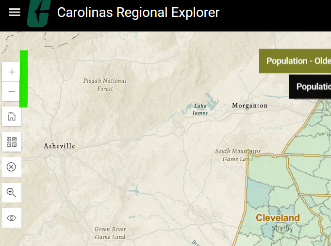
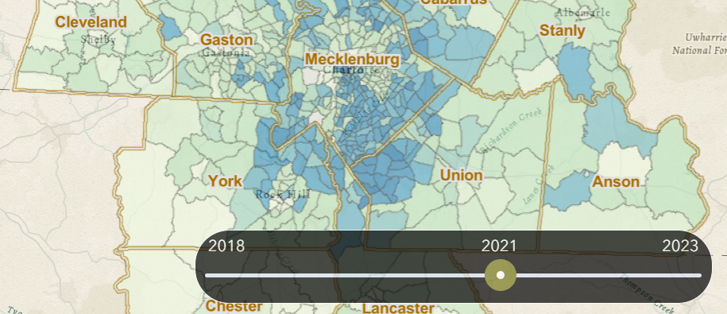
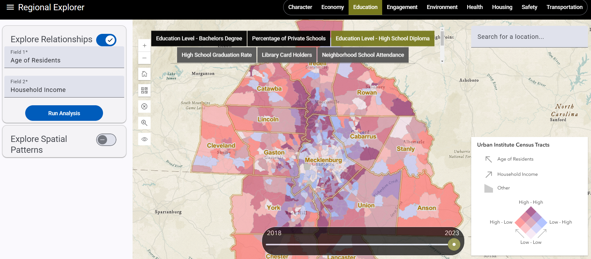
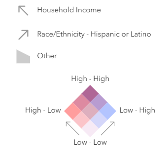

Carolinas Regional Explorer User Guide
This comprehensive user guide for the Carolinas Regional Explorer application, hosted at https://regionalexplorer.netlify.app/, is designed to assist users in navigating its features, exploring data relationships, and analyzing spatial patterns. The application is part of the Carolinas Regional Explorer project, a web-based interactive data platform developed by the UNC Charlotte Urban Institute, seeking to present neighborhood-level data on public life across 14 counties surrounding Mecklenberg County. These counties include Mecklenburg, Cabarrus, Union, Stanly, Rowan, Iredell, Catawba, Lincoln, Gaston, Anson, Cleveland, York (SC), Chester (SC), and Lancaster (SC). Modeled along the lines of the Charlotte-Mecklenburg Quality of Life Explorer (Quality of Life Explorer), the regional explorer expands the spatial footprint to serve the region and offers enhanced features to understand regional growth dynamics.
The guide is divided into three sections, each addressing specific tools and features, with detailed instructions and interpretations for effective use.
Section 1: General Navigation of the Interactive Maps

The first section focuses on navigating the interactive maps, which are central to the application’s functionality, covering the 14 counties served by the UNC Charlotte Urban Institute. Users can zoom, pan, select different geographic levels, interpret the maps, and use a time slider to view changes over time.
Zooming and Panning:
Users can zoom in and out using the mouse wheel or dedicated zoom buttons, found at the top-left of the map.
Panning is achieved by clicking and dragging the map, allowing exploration of different regions within the 14 counties.

Selecting Geographic Levels:
The search feature let users search for census tracts, towns, cities and counties in the region.
The dropdown from the search box also allows you to browse the counties and cities to select them without typing.
Selecting a city or county zooms in and shows the boundaries.

Interpreting the Maps:
The maps use color coding to represent values of selected indicators, such as socioeconomic or environmental data.
A legend is provided, showing what each color corresponds to, such as a gradient from light to dark indicating low to high values.

Using the Time Slider:
The time slider allows users to view data from different time periods, likely years or specific dates, to track historical changes in the 14 counties.

Section 2: Exploring Relationships Between Indicators

The second section covers the tool for exploring relationships between indicators using bivariate choropleth maps, accessed via the side bar.

Selecting Variables:
Open the side bar, located on the left, and locate the section for exploring relationships.
Select two variables from drop-down menus, ensuring they are relevant for comparison, such as household income and hispanic/Latino population.
Click ‘Analyze Correlation’ to generate the bivariate choropleth map, which displays the relationship between the two variables spatially across the 14 counties.
Interpreting the Bivariate Choropleth Map:
The map uses a combination of colors to represent the values of both variables. For instance, one variable uses shades of blue (light to dark for low to high), and another shades of red, with the resulting color on the map being a mix showing intermediate values.
This visualization helps identify correlations, such as areas with high values in both variables appearing in darker shades, across the region.

Understanding the Legend:
The legend, presented as a matrix or color grid, shows how different combinations of the two variables’ values are represented.
The arrows represent the axis of each variable with shades of color along the axis representing high and low values in those variables respectively. Simultaneously, the high values along these axes also represent the low values of the other variables and vice versa.
Colors in the top and bottom corner of the square represent areas with high values in both variables and areas with low values in both variables respectively.

Section 3: Exploring Spatial Patterns and Clustering

The third section addresses spatial pattern analysis using local Moran’s I, a statistical measure for identifying spatial clusters, accessed via a toggle button
Selecting an Indicator:
The indicator is selected in the same way as the explorer. Moving the toggle button lets you enter the spatial pattern analysis mode.
For example, if the median household income is selected in the explorer, clicking the toggle button shows the significant clusters and patterns of income in the region.

Interpreting Cluster Types:
The local Moran’s I map identifies four cluster types:
HH (High-High): Areas with high values surrounded by high-value areas, indicating hot spots, such as regions with consistently high crime rates.
LL (Low-Low): Areas with low values surrounded by low-value areas, indicating cold spots, such as regions with low population density.
HL (High-Low): Areas with high values surrounded by low-value areas, outliers where a high value is isolated, such as a wealthy neighborhood in a poorer region.
LH (Low-High): Areas with low values surrounded by high-value areas, outliers where a low value is isolated, such as a low-income area in a high-income region.
These clusters help identify spatial autocorrelation, showing where similar values cluster together across the region.

Caveats:
Interpretation should consider scale dependency; different zoom levels may reveal different patterns, affecting cluster identification across the 14 counties.
The definition of neighbors (adjacent areas) impacts results, and users should ensure it aligns with the analysis context, especially given the regional scope.
Data suitability is crucial; ensure the indicator is appropriate for spatial autocorrelation. Be cautious, as correlation does not imply causation, and clusters may reflect underlying factors not shown in the data.
Additional Resources
Below is a list of resources with links and citations to help people understand bivariate choropleth maps, spatial autocorrelation, and Local Moran’s I. These resources include accessible guides, academic explanations, and practical examples, suitable for beginners and those seeking deeper insight.
Bivariate Choropleth Maps
Bivariate choropleth maps use color to display two variables simultaneously, helping to visualize their spatial relationships.
“Bivariate Choropleth Maps: A How-to Guide” by Joshua Stevens
Link:https://www.joshuastevens.net/cartography/bivariate-choropleth-maps-a-how-to-guide/
Description: A beginner-friendly tutorial on creating bivariate choropleth maps, with conceptual explanations and practical steps. It emphasizes normalization and color scheme design.
Citation: Stevens, J. (2015, February 17). Bivariate Choropleth Maps: A How-to Guide. Retrieved fromhttps://www.joshuastevens.net.
“Bivariate Choropleth Maps” - Water Programming Blog
Link:https://waterprogramming.wordpress.com/2022/09/08/bivariate-choropleth-maps/
Description: A Python-based guide with code examples using Geopandas, showing how to blend two variables into a 2D colormap. Includes a GitHub repository for hands-on practice.
Citation: Water Programming Blog. (2022, September 8). Bivariate Choropleth Maps. Retrieved fromhttps://waterprogramming.wordpress.com.
“Bivariate Choropleth Maps” - CDC GIS Portal
Link:https://gis.cdc.gov/grasp/diabetes/diabetesatlas-bivariate.html
Description: An applied example from the CDC showing bivariate maps of diabetes and obesity, with a clear explanation of the 3x3 color grid (e.g., “LL” for low-low, “HH” for high-high).
Citation: Centers for Disease Control and Prevention. (n.d.). Bivariate Choropleth Maps. Retrieved fromhttps://gis.cdc.gov.
Spatial Autocorrelation
Spatial autocorrelation measures how similar values are based on their proximity, often summarized with global statistics like Moran’s I.
“Spatial Autocorrelation and Moran’s I in GIS” - GIS Geography
Link:https://gisgeography.com/spatial-autocorrelation-morans-i/
Description: A clear, illustrated introduction to spatial autocorrelation and Moran’s I, explaining positive (clustering) and negative (dispersion) patterns with examples like checkerboards.
Citation: GIS Geography. (2024, March 8). Spatial Autocorrelation and Moran’s I in GIS. Retrieved fromhttps://gisgeography.com.
“Chapter 8 Spatial Autocorrelation” - Spatial Statistics for Data Science with R by Paula Moraga
Link:https://www.paulamoraga.com/book-spatial/spatial-autocorrelation.html
Description: An academic yet accessible chapter covering Moran’s I and Geary’s C, with R code for analyzing housing prices in Boston. Ties into Tobler’s First Law of Geography.
Citation: Moraga, P. (n.d.). Chapter 8 Spatial Autocorrelation. In Spatial Statistics for Data Science: Theory and Practice with R. Retrieved fromhttps://www.paulamoraga.com.
“How Spatial Autocorrelation (Global Moran’s I) Works” - ArcGIS Pro Documentation
Description: A technical guide from Esri on calculating Moran’s I, including z-scores and p-values, with practical considerations for GIS users.
Citation: Esri. (2022, January 5). How Spatial Autocorrelation (Global Moran’s I) Works. ArcGIS Pro Documentation. Retrieved fromhttps://pro.arcgis.com.
Local Moran’s I
Local Moran’s I identifies local clusters and outliers (e.g., HH, HL, LH, LL) within a dataset, extending global autocorrelation.
“Local Spatial Autocorrelation (1)” - GeoDa Documentation
Link:https://geodacenter.github.io/workbook/6a_local_auto/lab6a.html
Description: A practical guide using GeoDa to compute Local Moran’s I, with examples from 1830s France data. Explains cluster types and significance testing via permutations.
Citation: GeoDa Center for Geospatial Analysis and Computation. (2020, October 11). Local Spatial Autocorrelation (1). Retrieved fromhttps://geodacenter.github.io.
“Chapter 13 Local Spatial Autocorrelation” - Geographic Data Science with Python
Link:https://geographicdata.science/book/notebooks/06_spatial_autocorrelation.html
Description: A detailed tutorial on Local Moran’s I with Python (PySAL), including cluster interpretation (e.g., “hot spots” for HH, “doughnuts” for LH) and surface data examples.
Citation: Rey, S., Arribas-Bel, D., & Wolf, L. J. (n.d.). Chapter 13 Local Spatial Autocorrelation. In Geographic Data Science with Python. Retrieved fromhttps://geographicdata.science.
“Moran’s I: Definition, Examples” - Statistics How To
Description: A plain-English explanation of Moran’s I, covering both global and local versions, with simple examples and z-score interpretation.
Citation: Statistics How To. (2016, August 25). Moran’s I: Definition, Examples. Retrieved fromhttps://www.statisticshowto.com.